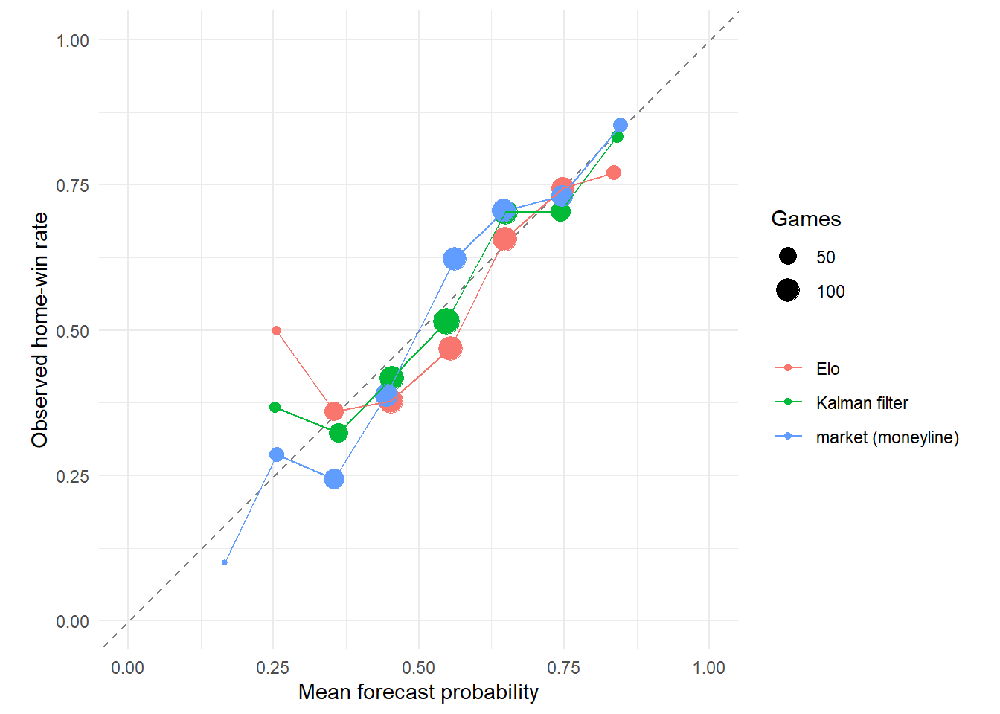

evaluate sequential forecasts without look-ahead and explain why a warm-up period is needed;
convert moneylines and spreads into probabilities and remove the bookmaker’s margin;
compare rating systems with the market on log loss, Brier score, and calibration;
explain break-even probabilities, expected value, and why beating the market is hard;
turn a posterior over ratings into probabilities for rankings; and
write a rating report that states its scale, uncertainty, and limitations.
2 The rule for scoring sequential forecasts
A forecast may use only information available before kickoff, including information used to set tuning parameters. Sequential updates alone do not prevent leakage if hyperparameters were fitted using future games. Here we fix illustrative hyperparameters in advance rather than use the stored full-period Stan fit for forecast scoring. The 2022 season supplies initial ratings and the baseline home-win rate. We score 2023 and 2024 games with decisive outcomes. This targets performance among decisive games. A full outcome model would include ties explicitly.
baseline_home_rate <-with(subset(nfl, season ==2022& tie ==0), mean(home_win))elo <-run_elo(nfl, k =20, home_advantage =55, margin_multiplier =TRUE)kalman <-kalman_ratings( nfl,sigma_obs =13, sigma_week =1.2,sigma_season =4, rho =0.6,home_advantage =2, initial_sd =6)# Rolling ridge: before each week, refit on the current season's earlier games.rolling_ridge <- nfl %>%mutate(ridge_margin =NA_real_)for (s inunique(nfl$season)) {for (w insort(unique(nfl$week[nfl$season == s]))) { rows <-which(nfl$season == s & nfl$week == w) history <- nfl %>%filter(season == s, week < w)if (nrow(history) <16) { rolling_ridge$ridge_margin[rows] <-2* (1- nfl$neutral_site[rows]) } else { fit <-ridge_ratings(history, lambda =7) rolling_ridge$ridge_margin[rows] <- fit$home_advantage * (1- nfl$neutral_site[rows]) + fit$ratings[nfl$home_team[rows]] - fit$ratings[nfl$away_team[rows]] } }}forecasts <- nfl %>%select(game_id, season, week, home_team, away_team, margin, home_win, tie, spread_line, home_moneyline, away_moneyline) %>%left_join(elo$games %>%select(game_id, elo_prob = home_prob), by ="game_id") %>%left_join(kalman$predictions %>%select(game_id, kalman_margin = predicted_margin, kalman_prob = home_prob), by ="game_id") %>%left_join(rolling_ridge %>%select(game_id, ridge_margin), by ="game_id") %>%mutate(ridge_prob =pnorm(ridge_margin /13),market_prob =remove_vig(moneyline_to_probability(home_moneyline), moneyline_to_probability(away_moneyline))[, 1],spread_prob =pnorm(spread_line /13.5) ) %>%filter(season >=2023, tie ==0, !is.na(market_prob))nrow(forecasts)
[1] 544
3 The market as a benchmark
A moneyline of means a bettor risks 150 to win 100; a moneyline of means risking 100 wins 130. The implied probabilities are
The two sides of a game imply probabilities that sum to more than one. The excess is the bookmaker’s margin, called the vig or hold, and dividing each implied probability by the sum removes it.
Compare the scores in this table for this evaluation window. The market includes information such as injuries that these results-only models omit. Model ordering can change with the period, tuning choices, and evaluation metric. Use paired game-level or week-level resampling to assess the uncertainty in score differences before declaring a winner.
4.1 Calibration
calibration <-bind_rows( forecasts %>%transmute(model ="Elo", probability = elo_prob, home_win), forecasts %>%transmute(model ="Kalman filter", probability = kalman_prob, home_win), forecasts %>%transmute(model ="market (moneyline)", probability = market_prob, home_win)) %>%mutate(bin =cut(probability, breaks =seq(0, 1, by =0.1), include.lowest =TRUE)) %>%group_by(model, bin) %>%summarize(mean_forecast =mean(probability), observed =mean(home_win), games =n(), .groups ="drop") %>%filter(games >=10)ggplot(calibration, aes(mean_forecast, observed, color = model)) +geom_abline(slope =1, intercept =0, linetype ="dashed", color ="gray50") +geom_point(aes(size = games)) +geom_line() +coord_equal(xlim =c(0, 1), ylim =c(0, 1)) +labs(x ="Mean forecast probability", y ="Observed home-win rate", color =NULL, size ="Games") +theme_minimal()

Calibration of three forecasters on 2023 and 2024 games. Points are bins of predicted probability; the horizontal position is the mean forecast and the vertical position the observed home-win rate.
With roughly 540 games, many bins contain only a few dozen outcomes. Differences from the diagonal may reflect sampling variability as well as miscalibration. Inspect bin sizes and uncertainty rather than concluding that a visually close curve proves calibration.
5 Break-even, expected value, and the difficulty of beating the market
A bet at decimal odds (American converts to ; converts to ) returns per unit staked if it wins. If the true probability is , the expected profit per unit is
and the bet breaks even at , which is exactly the implied probability before the vig is removed. To profit, a model’s probability must exceed the implied probability of the bettor’s side, which already includes the hold, and it must do so reliably.
The fixed-rule illustration has a negative realized return in this historical sample. This does not isolate the source of every forecast error or establish what would happen in another period. A model-implied edge requires independent evaluation, uncertainty analysis, and a realistic treatment of available odds before it supports a decision.
WarningTwo cautions
First, an apparent edge on one season of games is within noise; a return of a few percent on a few hundred bets has a standard error of several percent. Second, the Kelly criterion gives the stake fraction that maximizes long-run growth if is correct; with an overconfident model it produces ruin faster than flat betting.
6 Rankings with uncertainty
The Stan posterior for the final period turns every question about the ranking into a probability.
Posterior rank distributions for the six strongest teams at the end of the 2024 regular season.
Even the strongest team at season’s end has a meaningful chance of being only the third- or fourth-best team. A published ranking that omits this is stating a posterior mode as if it were a fact.
7 Communicating a rating
A rating report should let a reader answer four questions without contacting the analyst.
What is the scale? Points against an average opponent on a neutral field, log-odds, or Elo points. State it, and give the home advantage on the same scale.
How uncertain is each rating? Report an interval, or at least a standard deviation, and say what it excludes.
When is the rating for? A season-long average, a smoothed estimate for a date, or a forecast for the next game are different objects.
What does the model not see? Injuries, suspensions, weather, and motivation are absent from results-only models. Say so, and compare with the market where possible.
A reporting checklist for team ratings:
outcome modeled (result, margin, or goals) and data window;
design of the model, including home advantage, neutral sites, and ties;
prior or penalty and the estimated variance components;
for dynamic models, the drift and between-season assumptions;
forecast evaluation on games not used for fitting, against a market benchmark;
rankings as probabilities; and
known limitations.
8 Practice
Convert a moneyline of to an implied probability and to decimal odds.
Two sides of a game have implied probabilities 0.58 and 0.46. What is the hold, and what are the fair probabilities?
Why is the rolling ridge model at its worst in weeks 2 through 4?
A model gives a team a 60% chance of winning at decimal odds of 1.80. What is the expected value per unit and the Kelly fraction?
TipShow answers
; decimal odds .
Hold ; fair probabilities and .
It has seen only a handful of games per team and no prior information from the previous season, so its ratings are mostly noise and shrinkage pulls them all toward zero.
; Kelly fraction .
9 Key takeaways
Score forecasts made only with pregame information, after a warm-up period, and exclude outcomes the forecast cannot express.
Moneylines convert to probabilities; remove the hold before comparing with a model.
The market beats results-only models; the state-space model is the best of those models and the rolling static model the worst.
Apparent betting edges from a results-only model do not survive the hold; treat market log loss as the bar to clear.
Report rankings as rank probabilities and state scale, uncertainty, timing, and blind spots.